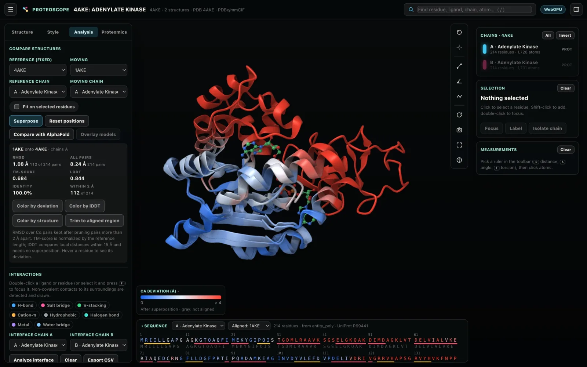
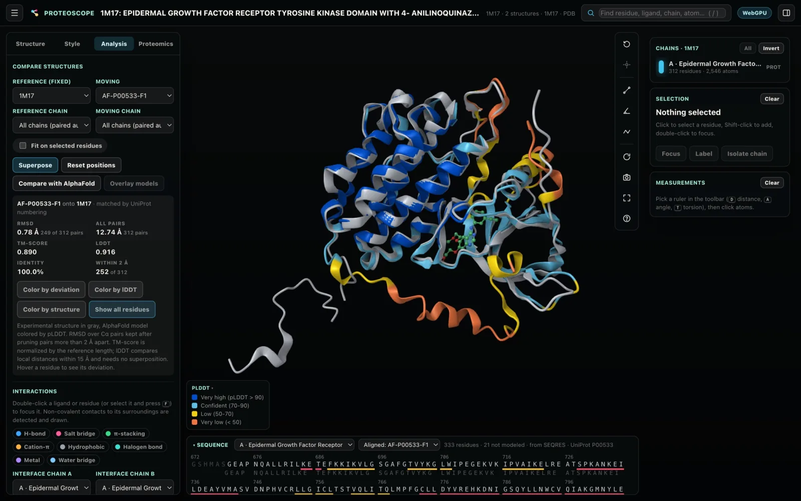

Comparing structures
Put several structures in one scene, superpose them by sequence or by structure alone, and see where they differ. You can also compare an experimental structure with its AlphaFold model, or overlay the models of an NMR ensemble.
Loading several structures
A new structure normally replaces the scene. To keep what is already there, use any of these:
- Tick Add to the scene instead of replacing before you fetch or open a structure.
- Drop several files onto the window at once.
- Name several files on the command line when you start Proteoscope.
- Use a link such as
http://127.0.0.1:8765/#fetch=4AKE,1AKE&superpose, which loads both entries and superposes the second onto the first. - In Finding structures, Add adds a structure superposed on the active one.
With several structures in the scene, the Structure color scheme gives each one its own color; it is the default when a scene holds several.
The structures list
The structures list in the Structure tab shows every structure with its color.
- Click a structure, in the list or in the 3D view, to make it active. The metadata, chains, sequence, selection and the Analysis and Proteomics tabs follow the active structure.
- The eye button hides a structure, and × removes it.
- Changes in the Style tab apply to all structures or only to the active one; you choose the scope.
Superposing by sequence
Superpose in the Analysis tab, or the superpose command, moves one structure, or all the others, onto a reference.
- Pairing residues. Residues are paired by a global alignment (BLOSUM62 blended with secondary structure, as in ChimeraX matchmaker), and the principal atoms (Cα, or C4′ in nucleic acids) are fitted by least squares.
- Pruning outliers. Pairs more than 2 Å apart are pruned iteratively, so a flexible loop or a moving domain does not drag the fit. Fit on selected residues fits on a domain or binding site you selected.
- Chains. Chains are paired automatically by sequence, and identical subunits by position; choose chains to compare one pair. When the chains of a complex are arranged differently, the fit uses the chain pair that superposes best.
From the command line, this superposes 1AKE onto 4AKE, fitting on the adenylate kinase CORE domain:
superpose 1AKE onto 4AKE fit /A:1-29+60-121+160-214What the result reports
- RMSD of the fitted core and of all pairs
- TM-score, normalized by the reference
- lDDT
- Sequence identity
- The number of pairs within 2 Å
- For complexes, a per-chain table
After a superposition, the sequence panel shows a second row with the aligned residues of the other structure, with substitutions highlighted.
Structure-only pairing
Remote homologs have sequences that align poorly. For them, set Pair residues by to Structure (TM-align), or run tmalign. Residues are then paired by structure alone with TM-align (MM-align for complexes), ported from US-align and giving its scores.
- The report adds the TM-score normalized by each structure, and the aligned length.
- Coloring, the aligned sequences and sessions work as they do for sequence pairing.
This superposes SUMO-1 on ubiquitin by structure alone:
tmalign 1A5R onto 1UBQSeeing the differences

Two color schemes show how the structures differ:
| Scheme | What it shows |
|---|---|
| Deviation after superposition | The Cα distance to the aligned residue, from 0 to 4 Å (blue-white-red). |
| Local agreement (lDDT) | Per-residue lDDT against the compared structure, in the pLDDT colors. lDDT compares local distances and needs no superposition, so a hinge motion does not mask a well-preserved domain. |
- Hovering a residue shows its deviation.
- Selecting or hovering a residue highlights the aligned residue in the other structure.
- Focusing a binding site shows the matching side chains in both structures.
- Trim to aligned region hides residues outside the compared span.
- Measurements work between structures.
Comparison values also work in selections:
deviation > 2andlddt < 0.7select by deviation or local agreement;select deviation > 5selects the residues that moved more than 5 Å after superposing.alignedis the set of residues paired in a comparison.- Distances reach across structures, so
within 5 of (#1 and ligand)finds residues of a superposed structure near another structure's ligand.
Comparing with AlphaFold
Compare with AlphaFold fetches the AlphaFold DB model for each UniProt accession of the active entry and superposes it by UniProt numbering.
- The experimental structure turns gray.
- The model keeps its pLDDT colors and is trimmed to the aligned span.
- The model's PAE matrix is available when the model is active.

For what pLDDT and PAE tell you about the model, see Predictions and AlphaFold.
Overlaying ensemble models
Multi-model files, such as NMR ensembles, show a model slider with a play button. Overlay models in the Analysis tab superposes every model of the ensemble on the core the models share and shows them together, with the mean RMSD and per-residue RMSF.
- Color by Ensemble flexibility (RMSF) to see the flexible regions.
- Select them with a value such as
rmsf > 2.
Assemblies and superpositions. Changing the biological assembly of a structure undoes its superposition, because assembly operators are defined in the deposited coordinate frame.
Try it and keep it
- The conformational-change group of Bundled examples (Structure tab) has structures to compare: 4AKE and 1AKE, adenylate kinase open and closed (superposed on the CORE domain); 4HHB and 1HHO, hemoglobin in the T and R states; and 1JM7, the BRCA1–BARD1 NMR ensemble. See Bundled examples.
- Sessions record superpositions (refitted when the session opens), ensemble overlays and trimming. See Sessions, figures and methods.
- The related commands are
superpose,tmalign,alphafoldandoverlay. The help dialog (?) lists the syntax of each.
Checked against known cases
The comparison tools give these results on well-studied pairs:
| Comparison | Result |
|---|---|
| Adenylate kinase closed (1AKE) onto open (4AKE), chain A | 1.08 Å over 112 core pairs; TM-score 0.68; the LID and NMP domains deviate |
| Human α-globin vs β-globin (4HHB chains A and B) | 44.6% identity with the D-helix gap; 1.10 Å over 120 pairs; TM-score 0.89 |
| EGFR (1M17) vs AlphaFold model P00533 | 0.78 Å over 249 of 312 pairs; TM-score 0.89; lDDT 0.92 |
| Hemoglobin R state (1HHO assembly) onto T state (4HHB) | One αβ dimer fits within 1.1–1.5 Å, the other is rotated (2.7–4.5 Å) |
| SUMO-1 (1A5R) onto ubiquitin (1UBQ), structure-only | 71 pairs at 2.36 Å, TM-score 0.654, as US-align gives; sequence pairing reaches 0.625 |